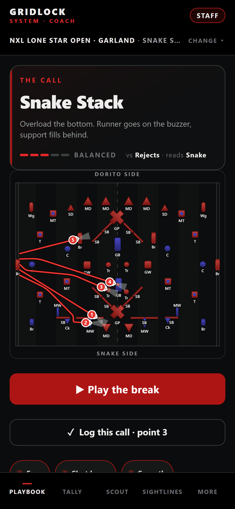
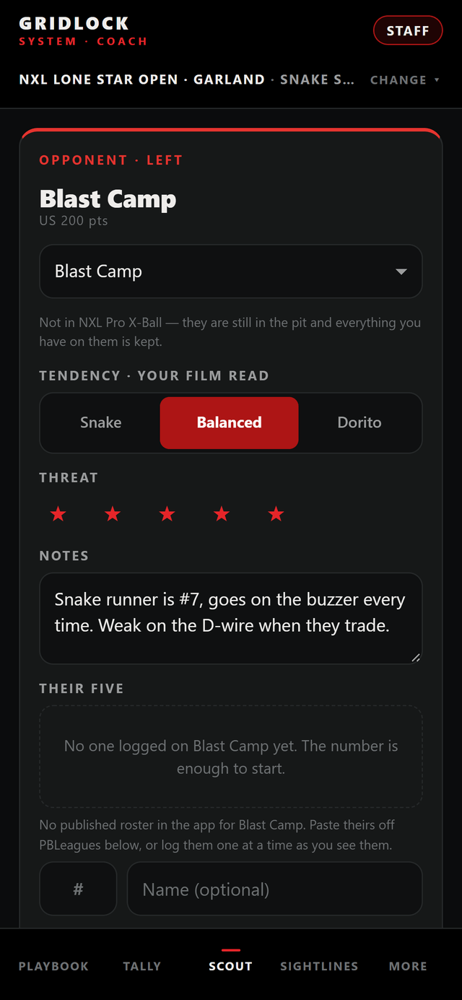
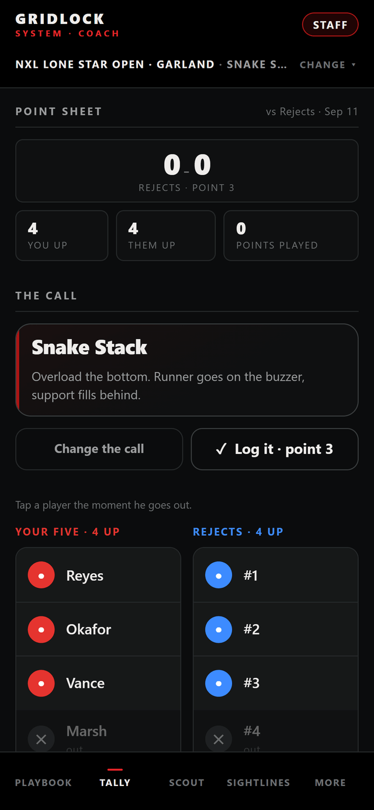

A call every player can read.
Pick the field and breakout. Set each player's route, face and shot lane. Hand the five their cards.
Between the buzzer and the next point
Your playbook, point sheet and read on the other pit. Together on the sideline.
Works on your device. No cloud account. Keep a copy of your season.

A point from every angle
Pick the field and breakout. Set each player's route, face and shot lane. Hand the five their cards.
Keep team notes, log the calls you see and compare your answers. Your observations build the read.

Tap through the point. Keep matches, player outs and bunker notes together when you come back to the sheet.

Scout reads and sightlines are coaching aids. They are not predictions or a substitute for the officials' live call.
A notebook you own
Rosters, field walks, lineups, grades and clinic sign-ins live on this device. Messages and league notices are local records; share a copy through your own apps when you need to reach the squad.
Use More → Nexus → Save a copy before a tournament or a device change. There is no cloud service to sync or recover your season for you.
How to save and restore →The next point starts here